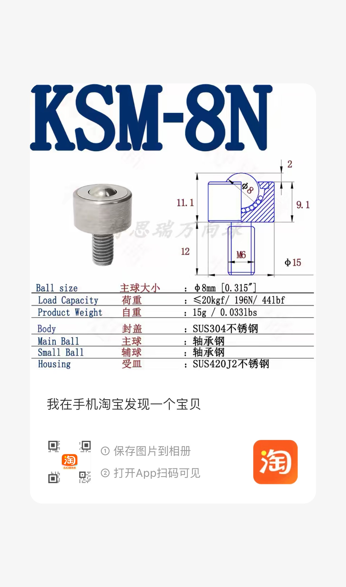
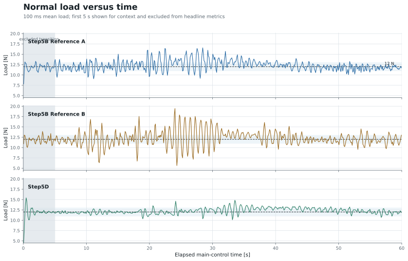
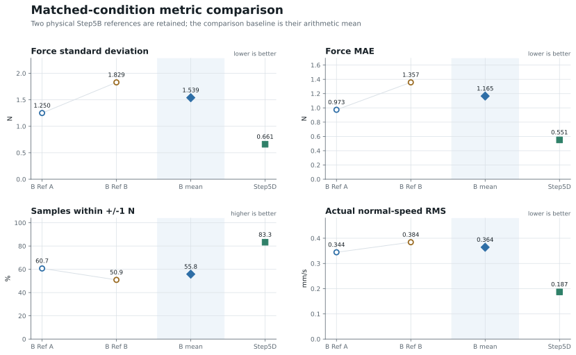
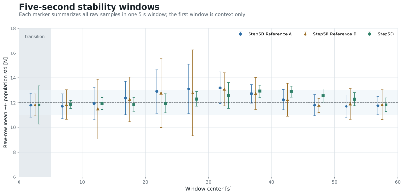
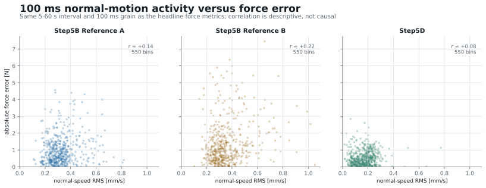

UR10e contact-control progress · Group meeting · 16 July 2026
Step5D Force-Control Progress
Executive summary
Under matched outer-loop gains and a common 12 N target, Step5D reduces force fluctuation and normal-motion activity without materially shifting the mean load.
- Force standard deviation is 57.1% lower than the mean of two Step5B references.
- Force MAE is 52.7% lower, while coverage inside 12 ± 1 N increases by 27.5 percentage points.
- Actual normal-speed RMS is 48.6% lower, consistent with less normal-direction excitation.
- The surface was prepared before both comparison campaigns, so sanding is a common condition rather than an explanation for the controller difference.
- Twelve newtons is an empirical preload choice supported by a low-load dropout attempt, a completed 10 N run, and a completed 12 N reference. It is not derived from the KSM-8N model name and is not claimed to be mathematically optimal.
- The automatic-tuning framework is implemented, but this report contains no fabricated or provisional tuning result.
Interpretation boundary. These values compare independent physical runs with matched outer-loop parameters. Step5B and Step5D use different inner command realizations, so the data support a stability comparison but do not isolate one causal component.
Report contents
1. [Executive summary](#summary) 2. [Experimental setup and contact mechanics](#setup) 3. [Surface preparation](#surface-preparation) 4. [Why 12 N instead of 5 N](#why-12n) 5. [From Step5B to Step5D](#step5b-to-step5d) 6. [Fair comparison protocol](#comparison-protocol) 7. [Force stability results](#force-stability) 8. [Why Step5D appears more stable](#stability-mechanism) 9. [Current Step5D completion boundary](#completion-boundary) 10. [Automatic tuning objective](#tuning-objective) 11. [Parameter grid and Bayesian Optimization](#parameter-search) 12. [Physical experiment loop](#physical-loop) 13. [Video evidence and next experiment](#video-next)Experiment basis
Experimental setup and contact mechanics
The UR10e end effector uses a KSM ball-transfer unit as the rolling contact point. The measured Cartesian force is projected onto the current control normal, while the robot follows the prescribed tangential cycloid motion and regulates the normal load.
What the controller must regulate
- Normal direction: maintain a compressive contact load near 12 N.
- Tangential direction: complete the same cycloid motion without injecting unnecessary normal motion.
- Orientation: remain locally consistent with the contact frame.
- Joint realization: convert the Cartesian objective into commands that the robot can execute smoothly and safely.
The contact force is not determined by the outer force law alone. Surface geometry, the rolling-ball mechanism, robot kinematics, command smoothing, joint acceleration, and the low-level robot controller all affect the measured response.
Evidence timeline
The preparation therefore precedes both controller comparisons.
Controlled experimental condition
Surface preparation
The contact plate was progressively prepared using 240#, 320#, 400#, and 600# abrasive papers. The purpose was to remove local high spots and reduce abrupt changes along the rolling-contact path.

Common-condition conclusion. Surface preparation was common to both Step5B and Step5D comparison runs. It reduced uncontrolled surface disturbances, but it does not explain the observed difference between the two controllers.
Target-force decision
Why 12 N instead of 5 N
The preload target was selected from the installed contact mechanics and physical evidence, not from the text “8N” in the product name.

Physical evidence ladder
5 N — insufficient margin in one attempt
One 5→15 N ramp attempt lost contact before the target exceeded approximately 5.1 N. This is one physical attempt, not a strict mechanical threshold.
10 N — continuous motion validated
60.2 s completed; mean/median 10.26/10.21 N; p05/p95 7.11/13.47 N; max 18.55 N; 0.20 s below 5 N; 0 s above 20 N.
12 N — selected operating point
60 s completed; mean/median 12.265/12.197 N; p05/p95 10.298/14.611 N; max 16.952 N; 0 s below 5 N and 0 s above 20 N.
Decision. Twelve newtons provides more preload margin than 5 N while remaining well inside the observed force envelope. It is about 6.1% of the vendor’s nominal 196 N component capacity, but robot and EOAT safety still depend on the actual guards and assembly—not on the vendor rating alone.
Controller realization
From Step5B to Step5D
Both controllers use the same local outer force law and target:
The difference is how that Cartesian objective becomes robot motion.
What Step5D adds
- A joint-space solver coordinates all six joints while satisfying the task-space objective.
- Joint-velocity changes are explicitly limited before transmission.
- The robot-side acceleration setting adds another smoothing boundary.
What remains matched
- 12 N target, P = 0.001, I = 10⁻⁵, damping = 7.
- Same integral limit and tangential gain.
- Locally equivalent orientation gain and the same contact path.
Measurement contract
Fair comparison protocol
The comparison keeps the outer-loop conditions fixed and reports two Step5B physical references rather than hiding run-to-run variation.
| Comparison item | Locked value |
|---|---|
| Target force | 12 N |
| P | 0.001 |
| I | 10⁻⁵ |
| Damping | 7 |
| Integral limit | 1 N·s |
| Tangential gain | 1.5 |
| Headline interval | 5–60 s of main contact control |
| Resampling | fixed 100 ms bins |
| Samples per run | exactly 550 bin means |
Metric definitions
- Force standard deviation: population standard deviation of 550 mean-load bins.
- Force MAE: mean (|F_i-12|) over the same bins.
- Within ±1 N: share of bins satisfying |Fi − 12| ≤ 1 N.
- Normal-speed RMS: RMS of raw Cartesian speed projected onto the control normal over the same 5–60 s interval.
The historical comparison uses elapsed monotonic time measured from the first main-control row. This preserves 550 bins for all three runs despite scheduler gaps in the Step5D recording. The first 5 s are shown separately as contact-transition context and are excluded from headline metrics.
Limitations. These are independent physical runs, not a randomized A/B experiment. Step5B and Step5D have different inner realizations. The evidence therefore compares observed stability under matched outer parameters; it cannot attribute every improvement to the RNN alone.
Matched 12 N comparison
Force stability results
Step5D lowers fluctuation without shifting the mean load
| Metric | Step5B mean | Step5D | Change |
|---|---|---|---|
| Force standard deviation | 1.539 N | 0.661 N | 57.1% lower |
| Force MAE | 1.165 N | 0.551 N | 52.7% lower |
| Within ±1 N | 55.8% | 83.3% | +27.5 percentage points |
| Normal-speed RMS | 0.364 mm/s | 0.187 mm/s | 48.6% lower |
| Mean load | 12.278 N | 12.265 N | −0.013 N |
The mean load changes by only 0.013 N, so the primary difference is reduced variation rather than a shifted operating point.

The time-series view shows where the aggregate improvement comes from: both Step5B references contain larger oscillatory intervals, while Step5D’s deviations are smaller and more uniform.

The improvement is consistent across all four headline measures: lower force spread, lower absolute error, greater target-band coverage, and lower actual normal-direction motion.

Step5D’s window-to-window mean still follows the contact path, but its within-window spread remains consistently smaller—especially where Step5B exhibits the largest oscillations.
Mechanism and limits
Why Step5D appears more stable
The strongest direct mechanism evidence is the reduction in actual normal-direction motion: 0.364 mm/s RMS for the Step5B mean versus 0.187 mm/s for Step5D. Less normal-motion excitation is consistent with smaller contact-force fluctuation.

Three mechanisms plausibly act together:
- The constrained RNN solver coordinates the six joints while satisfying the Cartesian task.
- The host joint-velocity slew limit suppresses abrupt command changes.
- The robot-side acceleration limit further smooths the realized joint motion.
Causal boundary. The current runs change the entire inner realization together. The next controlled study should separately remove or vary the host slew limit and the robot-side acceleration limit before assigning the full improvement to the RNN solver.
Current evidence boundary
Current Step5D completion boundary
A complete contact trajectory produced the force/path data used in this report, with the robot remaining inside the observed force envelope.
The revised scheduling route completed an offline 60.15 s timing test with 1.18 ms p99, 4.01 ms maximum gap, and no gap above 20 ms.
The scheduler-remediated route still needs a physical contact confirmation. A new Step5D video and tuning campaign follow after that check.
The force-stability conclusion is tied to the completed physical run. The timing remediation is described as implemented and offline-verified—not as fully validated on the robot.
No invented tuning results
Automatic tuning objective
The optimizer minimizes force-tracking error over the same 55 s evaluation window:
Here, Fi is the mean normal load in one fixed 100 ms bin from 5–60 s. The first 5 s are excluded from the objective.
Optimization variables
- P
- I
- damping
The execution profile—normal rate, host slew, and robot acceleration—is recorded separately so controller gains are not silently mixed with motion aggressiveness.
Feasibility constraints
- safety and force-envelope checks;
- continuous contact;
- path and orientation tracking;
- feedback freshness and controller alignment;
- complete retraction and return home;
- a complete, immutable evidence bundle.
An infrastructure or platform failure is not treated as evidence that a gain candidate is bad. Only eligible physical trials enter the optimizer history.
Current report state. The framework is implemented, but no eligible tuning trial is presented here. The page will add parameter history, best-so-far MAE, repeatability, and the next candidate only after real evidence exists.
Structured search
Parameter grid and Bayesian Optimization
Log-scale parameter lattice
Baseline: P₀ = 0.001, I₀ = 10⁻⁵, damping₀ = 7.
| Search condition | P | I | damping |
|---|---|---|---|
| Initial neighborhood | k = −4,…,4 | fixed at baseline | k = −4,…,4 |
| After ≥6 eligible trials and ≤15% repeat error | k = −6,…,6 | off or k = −4,…,4 | k = −6,…,6 |
| After repeated improvement at a boundary | k = −8,…,8 | off or k = −8,…,8 | k = −8,…,8 |
The controller interpretation is
Controller gains and execution profile remain separate
| Controller optimization | Execution-profile choices |
|---|---|
| P, I, damping | normal rate: 0.010, 0.015, 0.020 rad/s |
| objective: force MAE | host q̇ slew: 0.1, 0.2, 0.5 rad/s² |
| candidate must remain feasible | robot acceleration: 0.1, 0.2, 0.5 rad/s² |
| q̇ cap fixed at 0.5 rad/s |
Bayesian Optimization loop
- Run the exact baseline.
- Explore adjacent grid points until at least six eligible observations exist.
- Fit a Gaussian Process to objective and uncertainty.
- Use
qLogNoisyExpectedImprovementto choose one candidate. - Limit each candidate to one grid step and one coordinate from the incumbent.
- Re-test the incumbent every fourth trial.
- Immediately repeat any candidate with MAE ≤ 0.30 N.
- Declare success only when two eligible repeats are both ≤ 0.30 N and differ by no more than 15%.
Physical evidence generation
Physical experiment loop
The loop is serial: one candidate is physically evaluated, safely closed out, checked for evidence eligibility, and only then exposed to the optimizer. Safety, contact continuity, path tracking, and the return-home result remain hard gates rather than soft objective penalties.
Report update pipeline
→
If eligible tuning trials become available, the same pipeline adds parameter history, best-so-far MAE, repeatability, and the next proposed candidate. If no eligible trial exists, the report keeps the framework only.
Evidence handoff
Video evidence and next experiment
Next physical sequence
- Confirm the scheduler-remediated route in one guarded physical contact run.
- Record a new Step5D video under the matched 12 N condition.
- Run the exact tuning baseline before proposing a new candidate.
- Admit only complete, safe trials with all 550 objective bins.
- Update this report automatically from the new evidence bundle.
Questions the next experiment should answer
- Does the timing remediation preserve the force-stability result on hardware?
- How much improvement comes from the RNN solver versus host slew limiting and robot acceleration limiting?
- Can the tuning objective reach MAE ≤ 0.30 N twice with ≤15% repeat error?
Current takeaway. Step5D has completed the contact task with materially lower force fluctuation and normal-motion activity under the matched outer-loop setting. The next claim boundary is physical timing confirmation, followed by controlled gain and execution-profile ablations.